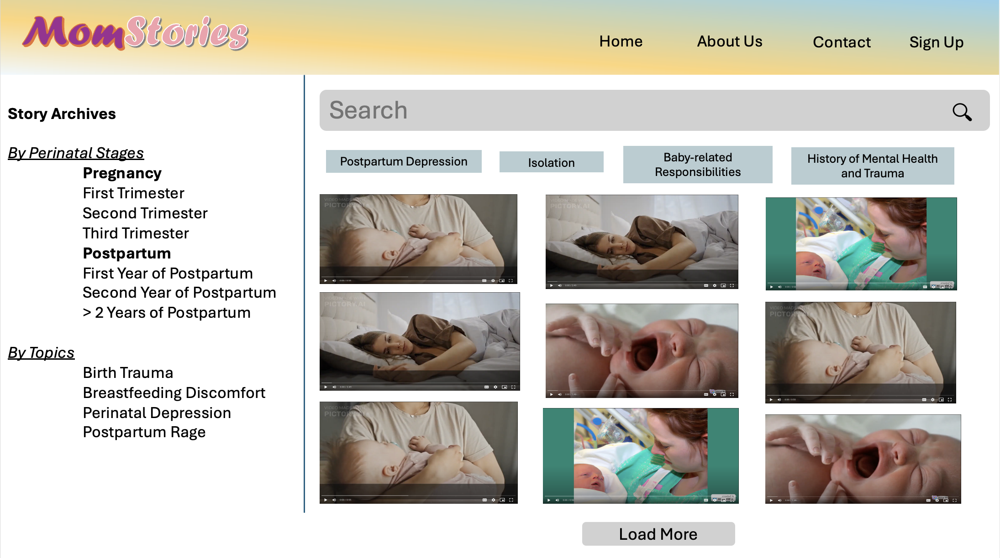
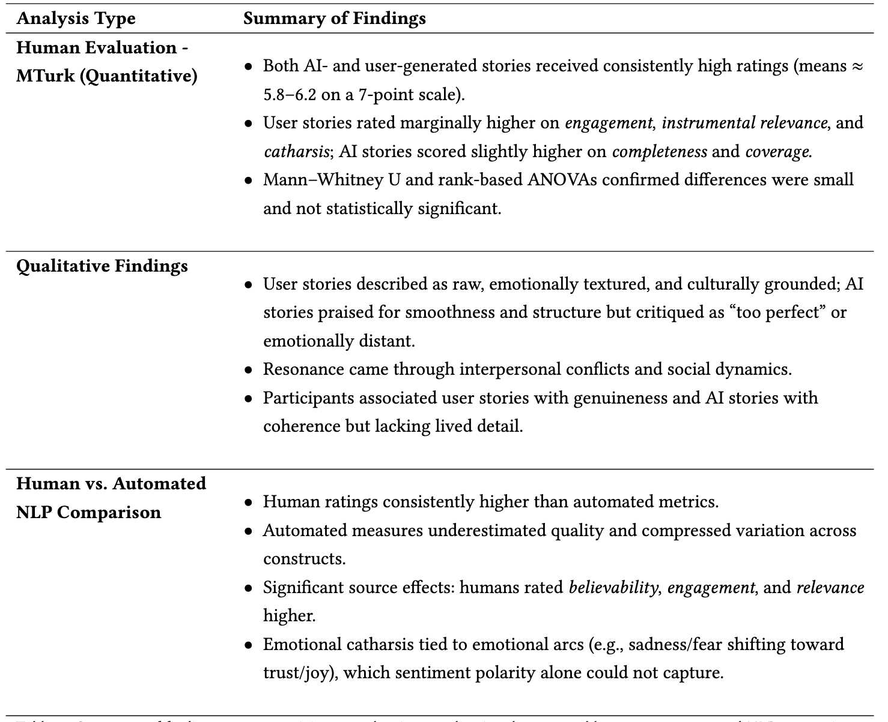
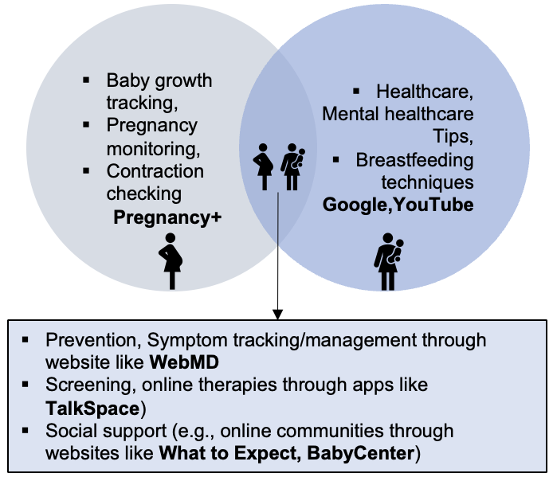
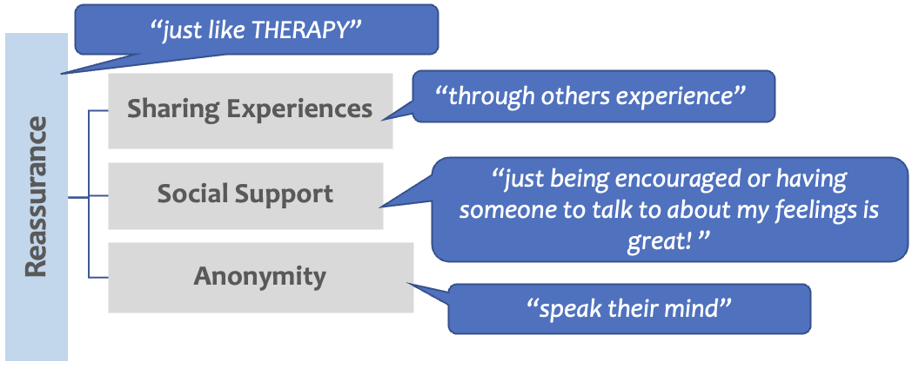
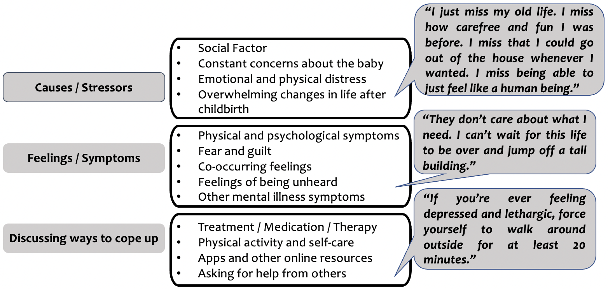

Developing a Web-Based Digital Storybook Platform Using Generative AI
Methods: Prototyping with React.js, OpenAI API integration, qualitative usability testing, and thematic analysis.
The integration of AI into mental health storytelling holds significant potential for creating personalized, empathetic digital experiences. In this project, we designed and developed a web-based digital storybook platform that utilizes generative AI to produce culturally relevant and emotionally resonant narratives for perinatal women. By combining adaptive storytelling and user-centered design principles, the system aims to promote mental health awareness and emotional engagement. This work provides insights into designing ethical and inclusive AI systems that blend creativity, sensitivity, and clinical relevance for diverse populations.

Evaluating AI- vs. Human-Generated Stories for Perinatal Mental Health
Methods: Mixed-methods study with 400 MTurk participants, survey analysis in Qualtrics and R, and sentiment analysis using Python (NLTK, Pandas).
As large language models increasingly generate health-related content, understanding how users perceive AI-authored narratives is essential. In this mixed-methods study involving 400 perinatal participants, we compared perceptions of AI-generated and human-written postpartum stories. Participants viewed AI stories as coherent yet emotionally detached, while human stories were valued for their authenticity and cultural specificity. These findings highlight the tension between algorithmic fluency and human empathy, underscoring the importance of AI-human co-creation to ensure emotionally intelligent, trustworthy digital storytelling for maternal wellbeing.

Exploring Women’s Perspectives and Barriers in Adopting Perinatal Mental Health Technologies
Methods: In-depth semi-structured interviews (n=15), qualitative coding, and reflexive thematic analysis.
Mental health applications are viewed as a promising solution to meet the increasing demand for perinatal mental health support. However, the experiences and barriers faced by users—particularly women from diverse backgrounds—remain underexplored. Through in-depth interviews with 15 mothers across pregnancy and postpartum stages, we identified key challenges related to trust, misinformation, privacy, and inadequate social support. The findings emphasize the necessity for culturally sensitive and transparent design practices, offering guidance for developers and researchers striving to make digital mental health interventions more inclusive and effective.

Investigating the Role of Storytelling in Online Postpartum Depression Communities
Methods: Mixed-methods approach combining interviews, surveys, and thematic analysis; coding with NVivo and quantitative data visualization in Python.
Storytelling plays a powerful role in helping mothers navigate postpartum depression and connect with others who share similar experiences. In this study, we adopted a mixed-methods approach to analyze interviews and surveys from mothers participating in online postpartum communities. Our findings reveal that narrative sharing fosters empathy, self-reflection, and a sense of belonging, while also serving as a mechanism for coping and identity reconstruction. This research proposes storytelling as both a design strategy and therapeutic intervention, informing the development of digital platforms that center emotional resonance and community care.

Understanding Online Social Support Dynamics in Postpartum Communities
Methods: Data scraping with Python, topic modeling (LDA), and qualitative coding.
Online communities have become vital spaces for mothers seeking support during the postpartum period. To understand these dynamics, we analyzed over 10,000 posts and comments from online postpartum depression forums using mixed-method analysis. The study revealed patterns of emotional exchange, empathy-building, and stigma negotiation that shape how mothers disclose vulnerability and seek advice. Our findings highlight the dual role of online communities as both supportive ecosystems and emotional labor spaces, offering implications for designing more empathetic, structured, and responsive digital support systems.